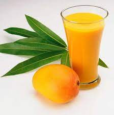
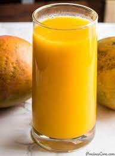
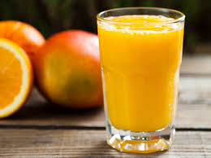

Kiwi Recipes
Mango Juice



Mango Juice – Nothing says summer like gulping down a big old glass of fresh, tropical tasting juice on a hot
afternoon. This is one of my favorite drink recipes during mango season because it’s quick and easy and, more
importantly, super delicious. This one is for you, all my fellow mango lovers! 🥭
Ingredients:
-
2-3 ripe mangoes
-
2 cups of water
-
Sugar or honey (optional)
-
Mint herp (optional)
Steps:
-
Wash and peel the mangoes. Cut the flesh away from the pit and chop it into small pieces.
-
Place the mango pieces in a blender or food processor.
-
Add water to the blender and blend the mixture until smooth.
-
Taste the juice and add sugar or honey if desired. This step is optional, as some mangoes are naturally very
sweet.
-
Strain the juice through a fine mesh strainer to remove any pulp or fibers.
-
Chill the juice in the refrigerator or serve over ice.
Optional variations:
-
Add a squeeze of lime juice for extra zing.
-
Use coconut water instead of regular water to give the juice a tropical twist.
-
Add a pinch of salt and some cumin powder for a savory mango juice (known as aam panna in some Indian cuisines).
Enjoy your fresh Mango juice!...